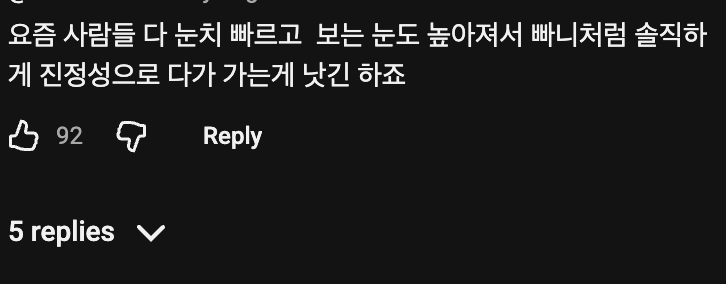
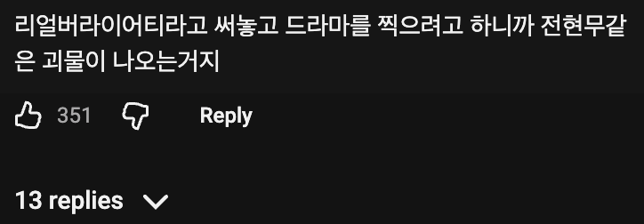
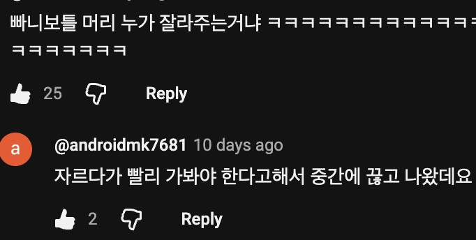

근데 저런 생각이면 한두번 해보고 내스타일 아니구나 하고 사실 아예 안하는게 맞지
곽튜브는 거의 6시내고향 급으로 그냥 레거시 전문으로 바꼈던데
누가 맞고 틀리고는 아닌거지
저걸 거부하면 작가라는 직업 자체의 존폐가 걸린 문제야. 작가 피디가 하는일이 뭐냐? 애초에 빠니가 맡은 롤은 레거시에서 연기자 라고 칭하던 포지션이고 모든것을 만드는건 뒤에잇는 제작진이였고 그에 맞는 비용과 보상이 각각 주어졌는데
저렇게 연기자가 연출자 말을 안듣기 시작하면 레거시의 근간이 흔들리는 문제로 여기는거지
그동안 스탭 수백명 데리고 다니는 레거시랑 빠니같은 1인 연출자랑 결이 전혀 안맞지
머 티비에 급식 부부나와서 관찰 예능 찍는것도 그렇고 일반인이 출연진으로 나와서 하는 프로그램도 100%대본이고 거부하면 컷하고 될때까지 다시간다. 계약서엔 비밀유지 조건 줫나 무섭게걸려잇고 손배 안당하려고 입다무는대신 막대한 출연료를 지급하니 티비에서 빌런역을 자처하는애들이 많은거지
빠니가 거부한다고 뭔 작가 존폐가 나옴?
이사람들은 화합을 잘 한거다~ 가 이래서 나온건가보네 ㅋㅋ
레거시와 유튜브가 충돌하는 지점이지
작위 vs 리얼
pd 파워 vs 날것의 힘
거의뭐
소멸되어가는 레거시에 굳이 왜 유튜버들이 올라타는지 이해는 안가지만
죽어가는 데드캣바운스 정도?
공중파의 홍보효과가 엄청나니까?
빠니는 솔직해서 인기가 많음
머리도 작가가 써준 대본머리야?
절충안으로 잘나왔네 깍다만듯한 느낌
머리 ㅈ같이 자른거 나만 느낀게 아니네ㅋㅋ 돈도 많이 버는양반이 미용실좀 좋은데 가지